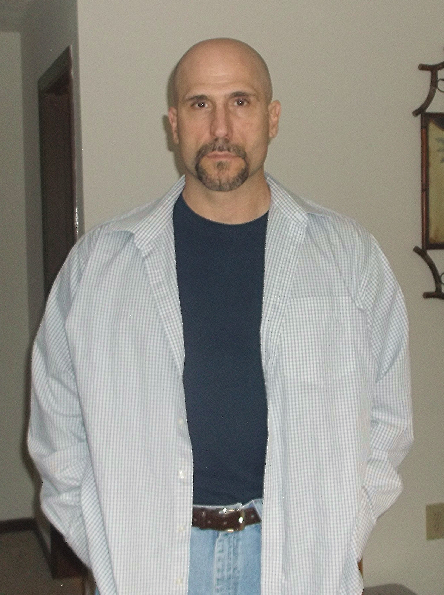

|
|
||
| Established 2014 | "All The News That's The Shit" | Number 69 |
Vincent Marino

Ted & I have exchanged creative ideas since high school. Ted appeared in plays, read extensively about entertainment, and danced to Van Halen music with a whimsy rarely displayed by heterosexual men. I sat like inert gas in front of my black & white T.V. Yet somehow the desire to write surfaced, and I indulged. A satire I wrote about a mutual friend got positive feedback from my peeps, and I was hooked. When Ted came to me about expanding my one-act-play "Release" into a web-series, I hadn't written anything in eight years. His expansive vision of an idea I had forgotten about has taken us and newest "Mackyd Partner" Chris Nicolo, on an exciting trip that we all hope is just beginning. Lastly, I like long walks in heavy traffic & Pokeno.
See my blog for other random creative whims I may have.